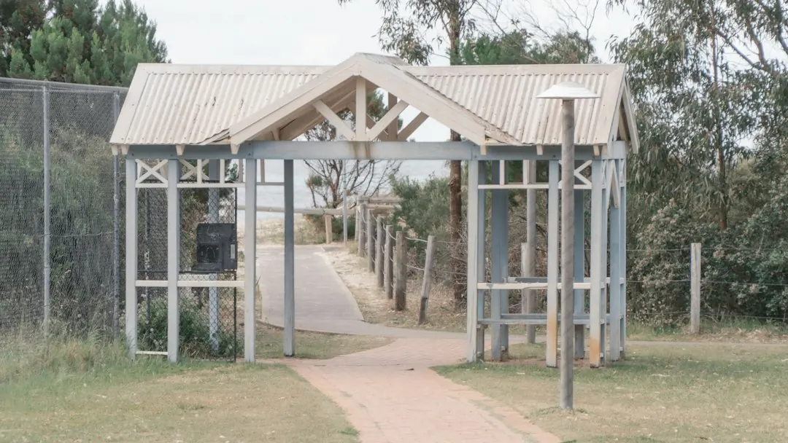

The cost of a gate and adjoining fence mainly follows the fence length and selected material. A gate or old fibro removal can change the quote. A written estimate should identify the run length, post spacing, footing type and whether removal is included. Colorbond suits low upkeep, aluminium slat and batten offers adjustable privacy, timber needs more care, and glass or aluminium can suit pool fencing. Confirm timing after the site has been assessed.
For homeowners comparing perth gate installation options, the practical decision is how the gate, fence material, ground conditions and existing boundary will work together.
Perth Gate Installation Explained
A gate that drags, sags or will not latch may have a tired hinge or a sagging post. Perth Fencing Pros says a local fencer measures the work before providing a price. Describe what happens during opening and closing, whether the adjoining fence leans, and whether access or nearby features affect the job.
The inspection helps separate a repair from a rebuild. Rotten posts, loose sheets and storm damage may affect only part of the run, while an older boundary may need replacing when the whole run has reached the end of its life. Ask which posts, panels, hinges and footings can remain and which need attention.
- Record whether the gate drags or fails to latch.
- Note leaning sections, rotten posts, loose sheets and storm damage.
- Provide the approximate run length and describe the existing fence.
Choose material around the gate's job
Material affects appearance, upkeep, privacy and how the gate relates to the boundary. Colorbond steel is described as a low upkeep choice for privacy and security, with matching gates. Aluminium slat and batten gives a modern line, adjustable privacy and very little upkeep. Timber has a warmer appearance but needs more care.
A front fence can support kerb appeal, while a side or rear gate may give greater weight to privacy and security. Pets need tight gaps at the base. Matching the gate to the fence can produce a more consistent finish across the run.
Pool fencing is a separate design question. Glass keeps the water visible from the house, while aluminium gives a firmer line and more screening. The barrier should follow the pool fencing standard described by the provider, with the layout suited to the pool area rather than copied from a general boundary fence.
Decide whether to repair or replace
Repair is worth investigating when the problem is confined to a few posts, panels, hinges or sheets. Replacement becomes more relevant when the whole run is unstable, the material has reached the end of its life, or the new gate forms part of a wider boundary project. Ask for the reason behind the recommendation and identify any components being retained.
Old fibro needs a separate discussion before work starts. Perth Fencing Pros states that it may contain asbestos and that a specialist explains its removal before the new fence goes in. Confirm whether removal and cartage are included in the written quote, then check which replacement material is proposed.
A matching boundary can make the gate position, finish and adjoining panels easier to assess together. The Perth boundary fencing guide provides additional context about the fence line around a property.
Make the quote easy to compare
Two quotes are difficult to compare when one describes only a gate and the other includes surrounding fence work. A useful written quote names the run length, post spacing, footing type and whether old fence removal is included. Check that it also identifies the gate, hinges, latch and finish.
Cost follows the metres of fence and the selected material. A gate changes the price, and removing an old fibro fence can move it further. Tricky ground may affect the work before digging begins, so ask how the site has been allowed for. Mention restricted access during the first enquiry.
- Confirm which sections are repaired or replaced.
- Check the material, finish and gate position.
- Ask whether footings, hardware and removal are included.
- Request a realistic timeframe after the site is seen.
Use the local setting properly
The published service area includes Perth and nearby suburbs such as Northbridge, East Perth and West Perth. Other named locations include Highgate, South Perth, North Perth, Leederville, West Leederville, Mount Lawley, Burswood, Subiaco, Victoria Park, Kensington, Menora and Maylands.
The useful local question is how the block affects construction. Perth Fencing Pros says local ground and wind exposure can influence post depth and spacing. Ask how those conditions, the existing boundary and access will affect the proposed gate, rather than choosing a design from appearance alone.
Prepare a useful enquiry
Begin with the gate's purpose, such as privacy, security, pets, pool separation, access or street appearance. Then describe the current condition, including leaning panels, rotten posts, loose sheets, storm damage or old fibro. An approximate run length helps set the scope, but the final price should follow measurement.
After the site is assessed, compare maintenance needs with the job. A matching gate and fence may simplify the finish, while a repair may be more sensible when only a few components have failed. Keep the written quote and check that the agreed run, gate, footings, removal and finish are all listed.
- Describe the job. State whether the gate drags, sags, will not latch, or is part of a new boundary.
- Measure the context. Provide the approximate run length and identify access limits or nearby structures.
- Choose the purpose. Decide whether privacy, security, pets, pool separation, upkeep or appearance leads the design.
- Check the quote. Confirm the run, posts, footings, hardware, material and removal work in writing.
| Situation | Likely discussion | Question to ask |
|---|---|---|
| A few rotten posts or loose sheets | Repair may address the affected section | Which parts can remain sound? |
| Leaning or end-of-life boundary | Replacement may be considered | Is the full run included? |
| Old fibro before a new fence | Removal and cartage need checking | What removal work is included? |
| New gate with matching fence | One coordinated scope may be simpler | Are hinges, latch and finish listed? |
Common questions
How long does gate installation take in Perth? The timeframe depends on run length, material and ground. A short Colorbond run can be quicker than a long timber fence with a gate and old fibro removal. A realistic timeframe follows a site inspection.
How much does a new gate and fence cost? The main cost signals are the metres of fence and the selected material. A gate, old fibro removal and tricky ground can change the price, so request a written quote after measuring.
Which material needs the least upkeep? The published guidance describes Colorbond as low upkeep and aluminium slat and batten as requiring very little upkeep. Timber gives a warmer look but needs more care.
What should a quote include? Check that it names the run length, post spacing, footing type and whether old fence removal is included. Also confirm the gate, hinges, latch, finish and affected repair sections.
This guide covers gate faults, material choices, pool barriers, quote checks and boundary installation questions in Perth.